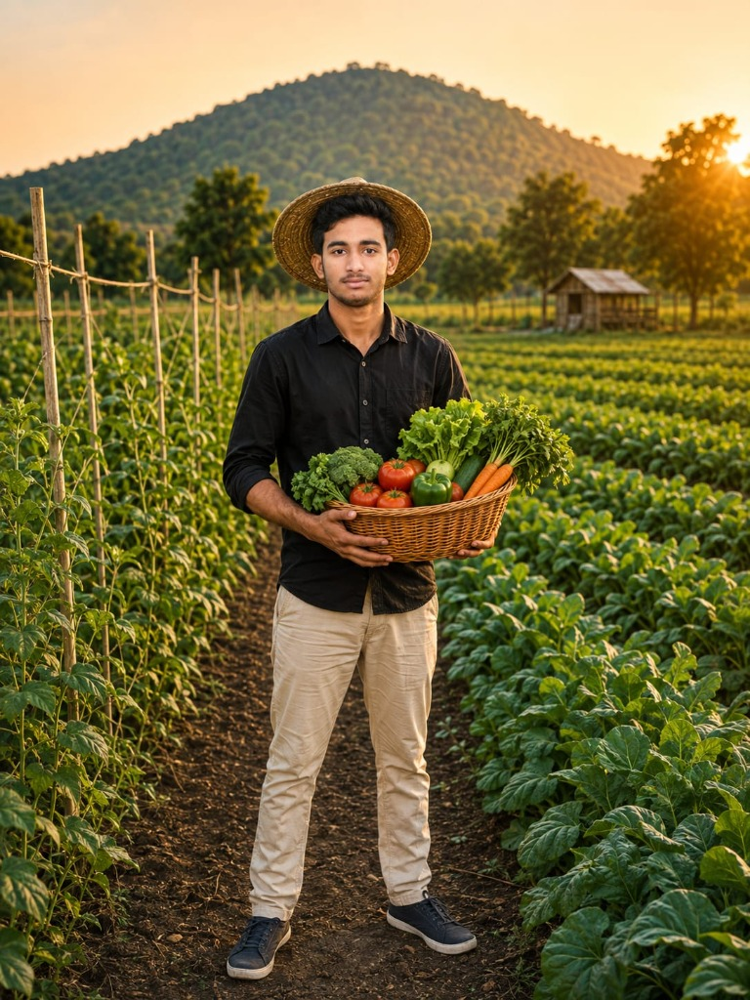

Nature's Finest. Grown With Purpose.
Fresh seasonal produce cultivated with care, respect for the soil and an uncompromising commitment to responsible, regenerative farming.

Why Choose Arif Organic Farm?
We believe that authentic food starts with healthy, living soil. Here is what makes our harvest sweeter, crispier, and nutrient-dense.
100% Chemical-Free
We never use synthetic fertilizers, herbicides, or systemic pesticides. Every crop is nurtured purely through natural vermicompost and botanical pest deterrents.
Heirloom Non-GMO Seeds
Our crops are grown from heritage seed varieties preserved for generations, ensuring authentic flavor, rich vitamins, and high natural antioxidant levels.
Solar Drip Irrigation
Powered by clean solar energy and precision drip lines that save up to 60% groundwater, preserving our natural aquifers for future generations.
Dawn-to-Door Delivery
Harvested at 5:00 AM while morning dew is fresh and delivered directly to your home in biodegradable packaging within 12 hours of picking.
Featured Organic Harvest
Hand-picked straight from our open fields and polyhouses this morning. Clean, crisp, and packed with vitality.

Organic Vine Tomatoes
Juicy, naturally ripened heirloom tomatoes with sweet balanced acidity and deep red pulp.

Crisp Farm Spinach
Tender dark green spinach leaves packed with natural iron, potassium, and vitamins A & C.

Sweet Organic Carrots
Naturally sweet and crunchy orange carrots grown in sandy loam soil, rich in beta-carotene.

Organic Farm Mangoes
Tree-ripened, naturally sweet aromatic mangoes without carbide or synthetic ripening agents.

Farm Fresh Eggs
Laid by hens foraging in sunny pasture paddocks. Deep golden yolks rich in Omega-3.

Raw Wild Honey
Pure, unprocessed honey extracted directly from floral field apiaries with active pollen enzymes.

Pure Organic Living
Cultivating Food the Way Nature Truly Intended
Founded by Arif alongside Dr. Shreya Sen, Harish Patel, and Meera Das, Arif Organic Farm was born out of a desire to restore biodiversity to farmland and provide our local community with uncompromised, clean nutrition.
By combining ancient companion planting with modern solar drip technology, we produce crops that burst with authentic aroma, natural sweetness, and superior nutritional density.
What Our Customers Say
Real feedback from families and chefs who rely on Arif Organic Farm for their daily nutrition.
"The taste of the tomatoes and spinach from Arif Farm reminded me of my childhood vegetable gardens. You can genuinely taste the crisp freshness and natural sweetness!"

"We visited Arif Organic Farm with our university students last month. Their seed-to-harvest process and vermicomposting setup are world-class examples of regenerative farming."

"Their morning delivery service is incredible. The carrots and cucumbers arrive cool and crisp in eco-friendly bags with zero single-use plastic. Highly recommended!"